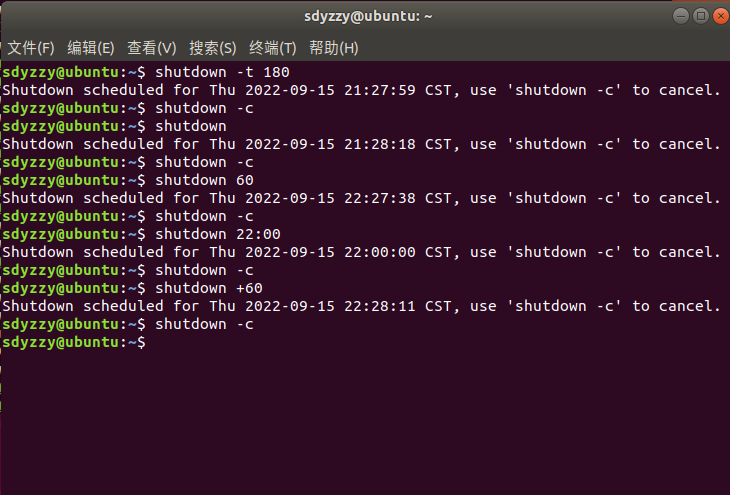
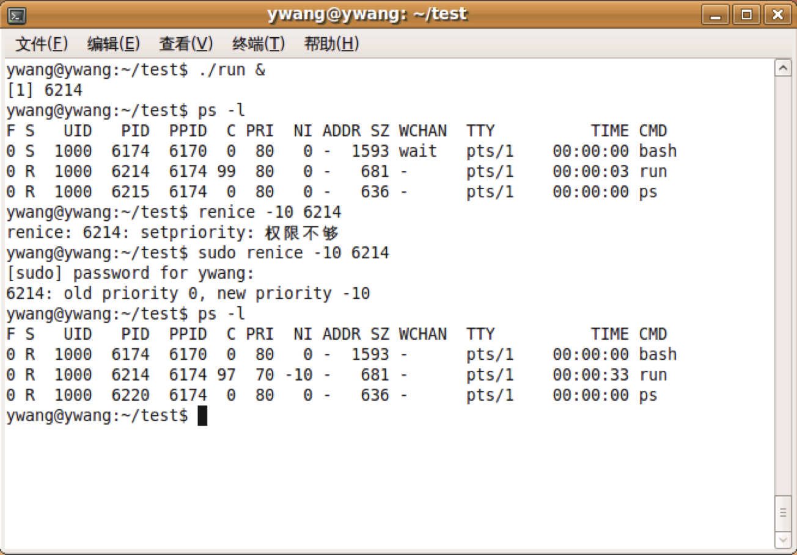

Linux系统与天文软件包IDL（第一部分）
Linux系统与天文软件包IDL（第一部分）
[TOC]
第一章·引言
1.概述
Ubuntu：基础硬件和基础网络知识、linux基础知识、文本编辑器、脚本语言；
- Linux与Ubuntu概述
- Ubuntu的安装
- X-Window简介及设置
- 用户管理
- 添加/删除程序及软件包管理
- 应用软件安装及简介
- Shell环境基础及设置
- 文件和目录管理
- 系统管理
- 硬盘管理
- 设备管理
- 进程管理及作业调度
- 网络管理
- Shell脚本简介
参考资料：
| 网址 | 描述 |
|---|---|
| www.Linuxforum.net | 国内最高水平的GNU站点 |
| www.chinaUnix.net | Unix系统管理的知识论坛 |
| www.Linuxeden.com | 下载软件不错，资源比较丰富 |
| www.gnu.org | GNU官方网站 |
| www.debian.org/intl/zh/ | Debian中文网站 |
| www.ubuntu.com | Ubuntu官方网站 |
| www.ubuntu.org.cn | Ubuntu中文官网及论坛 |
| wiki.ubuntu.org.cn | 中文wiki(快速入门) |
IDL：IDL的语法基础、编写程序、输入输出、直接图形系统、数据的图形显示、图像显示、创建图形输出、IDL天文软件包简介；
参考资料：IDL可视化工具入门与提高(闫殿武)
2.Linux的发展
Unix：
多用户、多任务操作系统，1969年由AT&T的贝尔实验室开发，技术成熟、可靠性高、网络和数据库功能强、开放性好；发展出多个分支：SCO(收费)、SUN Solaris(收费)、BSD、FREEBSD(对个人用户免费)、MINIX(用于教学目的)、OpenBSD、NetBSD等等。
Linux：
1990年芬兰黑客Linus发布“类Minix”的操作系统，在Usenet新闻组comp.os.minix登载了一份著名的帖子：Hello, everybody out there using minix, I’m doing a free operation system (just a hobby, won’t be big and professional like GNU) for 386 (486) AT clones.
系统命名为：Linus’ Minix，改名：Linux。- 1991年 Linux 0.10版正式推出。
- Linux标识：

- 优点：类Minix操作系统、免费使用、遵循GNU的自由软件和开放源代码的精神、狂热的个人爱好。
Linux内核（即操作系统）：==(p47)==
第二章·安装
1.基础
CD-ROM：Compact Disc Read-Only Memory，即只读光盘存储器，是一种在电脑上使用的光碟。这种光碟只能写入数据一次，信息将永久保存在光碟上，使用时通过光碟驱动器读出信息。
在Linux系统之中，每个设备都被当作一个文件来对待；几乎所有硬件设备文件都在/dev这个目录之内。==（p67）==
Linux文件后缀：在Linux系统中，文件类型不是通过后缀来区别的，所以有无后缀并不重要，但是为了方便对文件进行区别，通常加上后缀。
MBR格式==（p70，p111）==：主引导记录，用于处理启动引导程序，引导512字节（大小446字节），放在第一个分区最前面。
硬盘分区==（p72，p99）==：分为主分区、扩展分区、逻辑分区；
主分区：硬盘的启动分区，是独立的，也是硬盘的第一个分区，通常是系统安装所在的分区，比如C盘；
分出主分区后，其余的部分可以作为扩展分区（一般是剩下的部分全部作为扩展分区，也可以不全分，但是剩下的部分就浪费了）；
逻辑分区是对扩展分区的再分类。 扩展分区如果不再进行分区了，那么扩展分区就是逻辑分区；如果还需要进行分区操作的话，则逻辑分区只能从扩展分区上操作。 例如：要么只有D盘（即扩展分区不继续分），要么继续分为D、E、F盘；拓展分区不能格式化，主分区和逻辑分区才可以；
硬盘用hd或sd表示，不同的硬盘在后面加a、b、c等区分，一块硬盘的不同分区用1、2、3等区分。例如将第一块硬盘分为3个区，则分别会被命名为sda1、sda2、sda3；
逻辑分区设备号由5开始，即/dev/sda5；第二硬盘的第二逻辑分区：/dev/sdb6；
硬盘的容量=主分区的容量+扩展分区容量
扩展分区容量=各个逻辑分区的容量之和
一定要有主分区，挂载到根目录
/，拓展分区由逻辑分区组成，一般不创建；Linux文件路径均从根目录开始；
挂载：==（p79）==；只要目录里面是空的就可以挂载。
例如将sda1挂载到
/home，则可以在/home下看到sda1的所有文件；将sda2挂载到
....../a/b/c，则可以在....../a/b/c下看到sda2的所有文件；第一个用户就是root用户（管理员）；
/dev下保存了所有硬件；交换分区：swap，类似于Windows的虚拟内存，在内存不够的情况下，操作系统先把内存中暂时不用的数据，存到硬盘的交换空间，腾出内存来让别的程序运行。交换分区不使用挂载点！
2.略
第三章·基本使用
0.Linux命令与快捷键
1 | Ctrl+Alt+T # 打开终端 |
1 | 例子 |
1.进入Ubuntu终端的两种方式
全shell环境Ubuntu终端(系统只有文字对话界面)：
1
2Ctrl+Alt+F1(或F2,F3,F4,F5,F6)到终端模式
Ctrl+Alt+F7切换到图形模式窗口模式下启动终端：直接点击“终端”。
2.上侧面板
利用上侧面板进行各种软件的设置，类似mac。
3.root用户与sudo命令
- 在Ubuntu的默认环境下，root帐号是停用的；
- 所有与系统相关的工作指令，都要输入sudo，并输入密码确认；
- sudo工具的默认密码是第一个账户的密码。
4.Shell关机（利用shutdown命令）
要执行
shutdown命令必须是root用户或者operator组成员；语法：
sudo shutdown [-cfFhknrt] [时间] [警告信息]；释义：
参数：
-t seco：设定在几秒钟之后关机；-r：关机后立即重启，和reboot命令等价；-h：关机后不重启；
时间有多种设置方式：
- 参数后不跟随时间，则默认一分钟；
- 参数后直接跟随时间，单位为分钟；
- 利用
now、hh:mm或+m三种模式指定操作时间；
警告信息：要传送给所有登录用户的信息。
1
2
3
4
5
6
7
8
9
10例子
shutdown -h now # 立即关机(或者用shutdown -h 0)
shutdown -h +15 # 15分钟后关机
shutdown -h 2:30 # 在2:30关机
shutdown -r now # 立即重启(或者用shutdown -r 0)
shutdown -r +15 # 15分钟后重启
shutdown -r 2:30 # 在2:30重启
shutdown -c # 取消关机、重启等操作
5.Ubuntu的帮助系统
利用
man/info/--help在Linux中获取帮助，查询命令的使用和作用。其中man和info是独立的命令（进入帮助手册，按q键退出），--help是命令的参数（直接输出结果，不需要退出）。1
2
3man linux命令 # 例如：man vim
info linux命令 # 例如：info vim
linux命令 --help # 例如：vim --help
第四章·软件包管理
1.概述
Ubuntu相对于其他GNU/Linux套件的一大优势就是应用程序的安装与卸载十分方便。
Ubuntu主要有以下几种包管理工具：
工具 描述 dpkg Debian包安装工具 apt-get APT的命令行前端（云安装，从服务器上安装，自动解决冲突问题） aptitude APT的高级的字符和命令行前端（只需要知道有，不考） Dselect 使用菜单界面的包管理工具（使用图形界面的软件安装包，基于apt-get） Tasksel Task安装工具（只需要知道有，不考）
2.Ubuntu软件包基础
软件包类型：
- 二进制软件包：以Ubuntu特定的格式发布，使用**
.deb**为扩展名以示区别，可以使用Ubuntu工具dpkg解包和卸载(可以通过命令直接运行；不能直接用右键卸载)； - 源码包：可以使用dpkg-source工具打包/解包Ubuntu源码包。一般分为三个部分；
.dsc文件：用于描述源码包；.orig.tar.gz文件：未经修改的原始源代码压缩文件；.diff.gz文件：包含了该软件包Ubuntu化时所做的修改；
- 二进制软件包：以Ubuntu特定的格式发布，使用**
软件包命名约定：
Ubuntu系统中软件包的命名遵循一定的约定，如：
foo_ver-rev_arch.deb，其中：foo是软件包的名称，ver是软件本身的版本号，rev是Ubuntu修订版本号，arch是目标架构名称。
3.软件源的添加和使用
安装软件之前需要先确认所下载软件是否来自一个安全的源，将不同的软件源混杂在一起可能使系统崩溃。有两种更新软件源的方式：
终端下更新软件源：
第一步：备份当前的源列表文件，在终端输入如下命令：
sudo cp -p /etc/apt/sources.list /etc/apt/sources.list_backup；第二步：用文本编辑器编辑源列表文件：
sudo gedit /etc/apt/sources.list；
第三步：将新的软件源表写入文件sources.list；图形界面下更新软件源：
4.安装及管理软件包
在shell环境下通过命令行从网站下载软件包，并对软件包进行安装和维护，有以下5种方式：
apt（The Advanced Packaging Tool高级软件包工具）安装、更新、卸载软件包：
优点：强大的包管理系统；
图形化安装程序都是建立在其基础之上；
apt会自动处理依赖关系；
运行apt时，要求用户具有管理员权限。
常用操作命令：
1
2
3
4
5
6
7
8sudo apt-cache showsrc <package> # 查看软件的信息(pkg是软件包名称，不带版本号)
sudo apt-get source <package> # 获得源代码（只需告知源码包的名字，该命令就可主动下载全部源码包文件，即通常的.dsc、.orig.tar.gz和.diff.gz）
sudo apt-get install <package> # 安装软件包
sudo apt-get install package=version # 安装指定版本的软件包
sudo apt-get remove <package> # 删除软件（但是保留这些软件包在系统中的配置信息）
sudo apt-get update # 扫描每一个软件源服务器，获取新的软件包列表
sudo apt-get upgrade # 升级所有有可用更新的软件(慎用!!!!!)
apt-get help # 列出更多命令和选项(和apt-get --help等效)
安装/卸载deb格式软件包：
1
2sudo dpkg -i 软件名.deb # 安装deb软件包
sudo dpkg –r 软件名.deb # 删除deb软件包
直接使用应用商店安装
自己下载源代码包编译安装：
在终端的命令行中，安装步骤如下：
1.对源码包进行相应的解压操作（不同的压缩包有不同的解压操作方式）；
2.进入到解压目录下：
cd /${解压路径}；3.配置软件包的编译环境：
./configure；4.编译：
make；5.安装：
make install；=>注意：在进行源码编译安装前请确认已经建立好必要的编译环境，如：安装必需的Libraries、Compilers、Headers。
rpm文件包的转换使用：
1.安装alien程序，在终端输入：
sudo apt-get install alien；
2.在终端使用管理员权限运行以下命令：sudo alien package_file.rpm；
3.上面的命令将rpm文件转换为deb文件包，完成后会生成一个同名的package_file.deb文件；
4.使用dpkg来安装转换后的软件包，在终端输入：sudo dpkg –i package_file.deb；=>注意：用alien转换的deb包并不能保证100%顺利安装。
第五章·基本命令
1.目录结构==(p169)==
2.基本命令ls
Linux是多用户、多任务的操作系统
文件路径：
绝对路径：以斜杠
/开始（/代表根目录）；相对路径：用
./（当前目录），../（上一级目录），~（当前用户主目录），-（上次使用的目录）切换；
ls命令：显示当前目录下的文件，或列出文件信息==（p152）==
1
2
3
4
5
6
7
8
9
10
11
12
13ls # 显示当前目录下的文件(不包括隐藏文件,隐藏文件以"."开头)
ls -a # 显示所有文件(包括隐藏文件)
ls -l # 显示当前目录下的文件(不包括隐藏文件),并列出权限和属性
ls -c # 按文件的修改时间排序
ls -acl # 组合命令
ls -l 文件名 # 显示指定文件的权限和属性
ls --color=never # 不显示颜色
ls --color=always # 均显示颜色
ls --color=auto # 由系统自行判断是否显示颜色
dir # 与ls作用相同，均用于列出文件和目录信息(mac不可用)1
2
3
4
5
6
7
8
9
10
11例子
(base) sdyzzy@SDYZZY-MacBook-Pro ~ % ls -al
total 120
文件类型权限 链接数 文件拥有者 文件所属用户组 文件大小 修改日期(mdhm) 文件名
drwxr-x---+ 41 sdyzzy staff 1312 10 14 18:07 .
drwxr-xr-x 5 root admin 160 10 14 18:06 ..
-r-------- 1 sdyzzy staff 9 9 23 16:25 .CFUserTextEncoding
-rw-r--r--@ 1 sdyzzy staff 14340 10 14 18:06 .DS_Store
drwxr-xr-x 2 sdyzzy staff 64 10 14 18:06 study1
drwxr-xr-x 2 sdyzzy staff 64 10 14 18:06 study2
drwxr-xr-x 5 sdyzzy staff 160 10 12 12:25 杂ls详解：
ls运行机制：运行ls的时候，系统在环境变量PATH后面描述的文件目录里面按顺序依次寻找ls命令，找到之后直接执行，不再查询后面的目录；
1
2
3
4
5例子
(base) sdyzzy@SDYZZY-MacBook-Pro ~ % echo $PATH
/Users/sdyzzy/opt/anaconda3/bin:/Users/sdyzzy/opt/anaconda3/condabin:/usr/local/bin:/usr/bin:/bin:/usr/sbin:/sbin:/usr/local/mysql/bin
(base) sdyzzy@SDYZZY-MacBook-Pro ~ % which ls
/bin/ls # 表明ls在/bin目录之中,查找到之后，后面的目录不再查询用户，组：通过
ls -l可以查看（第三、四列）；文件/目录属性：
权限：
rwx这三个参数的组合（位置不可变），r文件可读，w文件可写，x文件可执行，-没有相应权限。从左到右分别为文件类型、文件拥有者权限、用户组权限、其他人的权限（因此共有10个参数）；修改权限：
chmod命令改变文件或目录（用-R递归）的权限；==（p157）==注意：
u/g/o/a和+/-/=之间没有空格；注意：除了使用
rwx，也可以用代数表示，即r=4，w=2，x=1。例如：chmod 777 filename。1
2
3
4
5
6
7
8
9
10
11
12chmod u+r(或w、x) 文件名 # user拥有读的权限
chmod u-r(或w、x) 文件名 # user失去读的权限
chmod u=rwx 文件名 # user拥有rwx权限
chmod g+r(或w、x) 文件名 # group成员拥有读的权限
chmod g-r(或w、x) 文件名 # group成员失去读的权限
chmod o+r(或w、x) 文件名 # 别的成员拥有读的权限
chmod o-r(或w、x) 文件名 # 别的成员失去读的权限
chmod a+r(或w、x) 文件名 # 所有成员拥有读的权限
chmod a-r(或w、x) 文件名 # 所有成员失去读的权限1
2
3
4
5
6
7
8
9
10
11
12
13
14
15例子
(base) sdyzzy@SDYZZY-MacBook-Pro ~ % ls -l test1 # 显示
-rw-r--r--@ 1 sdyzzy staff 219 10 14 18:47 test1
(base) sdyzzy@SDYZZY-MacBook-Pro ~ % chmod u+x test1 # 修改usr权限
(base) sdyzzy@SDYZZY-MacBook-Pro ~ % ls -l test1 # 显示
-rwxr--r--@ 1 sdyzzy staff 219 10 14 18:47 test1
(base) sdyzzy@SDYZZY-MacBook-Pro ~ % chmod g+x test1 # 修改group权限
(base) sdyzzy@SDYZZY-MacBook-Pro ~ % ls -l test1 # 显示
-rwxr-xr--@ 1 sdyzzy staff 219 10 14 18:47 test1
(base) sdyzzy@SDYZZY-MacBook-Pro study % ls -l file1
-rw-r--r--@ 1 sdyzzy staff 253 10 20 20:36 file1
(base) sdyzzy@SDYZZY-MacBook-Pro study % chmod 777 file1 # 代数方法
(base) sdyzzy@SDYZZY-MacBook-Pro study % ls -l file1 # 显示
-rwxrwxrwx@ 1 sdyzzy staff 253 10 20 20:36 file1
lsattr、lsusb、lspci：（下一节还有）
1
2
3lsattr # 列出文件的高级属性(p197)
lsusb # 查看你的系统里面都有哪些usb设备
lspci # 列出所有的pci设备的信息
3.计算机信息
1 | /proc/cpuinfo # 查看CPU信息 |
查看CPU信息：
/proc/cpuinfo；查看内存信息：
/proc/meminfo，其中MemTotal是整个内存的大小；用
free命令也可以查看内存信息（但是显示的信息更少）；

查看usb设备信息：
lsusb；查看硬盘信息：
sudo fdisk -l；查看显卡、网卡等设备信息：
lspci；
4.文件管理（要求完全掌握）
文件管理基本命令：
| 效果 | 命令 |
|---|---|
| 创建文件 | touch |
| 删除～ | rm |
| 查看～ | cat、tac、less、more、head、tail |
| 拷贝～ | cp |
| 列表～ | ls |
| ～改名或移动 | mv |
| 查找～ | find |
创建文件：==（p192）==
touch 文件名：在指定路径创建指定文件（不是目录！），文件类型由后缀指定（默认文档文件）；1
2
3
4
5
6
7
8
9
10
11例子
(base) sdyzzy@SDYZZY-MacBook-Pro study % touch test3
(base) sdyzzy@SDYZZY-MacBook-Pro study % touch ./test4
(base) sdyzzy@SDYZZY-MacBook-Pro study % touch ~/study/test5
(base) sdyzzy@SDYZZY-MacBook-Pro study % touch /Users/sdyzzy/study/test6
(base) sdyzzy@SDYZZY-MacBook-Pro study % touch test7.md
(base) sdyzzy@SDYZZY-MacBook-Pro study % touch .file1
(base) sdyzzy@SDYZZY-MacBook-Pro study % ls
test1 test2 test3 test4 test5 test6 test7.md
(base) sdyzzy@SDYZZY-MacBook-Pro study % ls -a
.file1 test1 test2 test3 test4 test5 test6 test7.md删除文件：==（p185）==
rm [-fir] 文件名1 文件名2 目录名3：同时删除几个文件；参数说明：
-i：交互式删除，即删除前逐一确认。为防止误操作，可以设置rm别名为alias rm='rm –i'；-f：force，即使文件属性设为只读，也强制删除，无需确认；-r：删除目录及其下文件；--force：强力删除，例如rm被设置别名之后删除麻烦，可用以下命令强制删除rm 文件名 --force；
1
2
3
4
5
6
7
8
9
10
11
12例子
(base) sdyzzy@SDYZZY-MacBook-Pro study % rm -i test3 # 确认删除
remove test3? y
(base) sdyzzy@SDYZZY-MacBook-Pro study % ls
test1 test4 test6
test2 test5 test7.md
(base) sdyzzy@SDYZZY-MacBook-Pro study % rm test* # 利用通配符"*"删除大量文件
(base) sdyzzy@SDYZZY-MacBook-Pro study % ls
(base) sdyzzy@SDYZZY-MacBook-Pro study %
(base) sdyzzy@SDYZZY-MacBook-Pro study % rm ./-aaa- # 删除名字带“-”的文件或目录查看文件全部内容：==（p187）==
cat、less、more、tac 文件名： 查看文件的内容；cat：从第一行开始显示文件内容；tac：从最后一行开始显示文件内容；less：逐行或逐页显示文件内容，用上下键、上下页键翻看；more：逐页显示文件内容，且只能用空格键向后翻页；less/more命令查看文件时，退出命令均为q；
查看文件前面/后面指定行数的内容：
head/tail [–n number] 文件名；==（用于数据截取）==参数：
–n number：number表示显示多少行，默认10行；1
2
3
4例子
head -n 20 /boot/grub/menu.lst # 查看文件menu.lst的前面20行
tail -n 20 /boot/grub/menu.lst # 后面20行
head -n -20 /boot/grub/menu.lst # 除了后面20行
复制文件或目录：==（p183）==
cp [-r] 被复制文件或目录名 新文件或目录名：默认复制在当前目录；- 参数：
-r：递归复制，用于复制目录；
1
2
3
4
5
6
7
8
9
10
11
12
13
14
15
16
17
18
19
20
21
22
23例子
(base) sdyzzy@SDYZZY-MacBook-Pro study % touch file1 # 创建文件
(base) sdyzzy@SDYZZY-MacBook-Pro study % cp file1 file2
(base) sdyzzy@SDYZZY-MacBook-Pro study % cp file1 ../study/file3
(base) sdyzzy@SDYZZY-MacBook-Pro study % cp file1 /Users/sdyzzy/study/file4
(base) sdyzzy@SDYZZY-MacBook-Pro study % ls
file1 file2 file3 file4
(base) sdyzzy@SDYZZY-MacBook-Pro study % cd /
(base) sdyzzy@SDYZZY-MacBook-Pro / % cp /Users/sdyzzy/study/file1 /Users/sdyzzy/study/file5
(base) sdyzzy@SDYZZY-MacBook-Pro / % ls /Users/sdyzzy/study
file1 file2 file3 file4 file5
(base) sdyzzy@SDYZZY-MacBook-Pro study % ls
file1 file2 file3 file4 file5
(base) sdyzzy@SDYZZY-MacBook-Pro study % mkdir filedir # 创建目录
(base) sdyzzy@SDYZZY-MacBook-Pro study % cp filedir ../filedir # 复制目录必须加参数-r
cp: filedir is a directory (not copied).
(base) sdyzzy@SDYZZY-MacBook-Pro study % cp -r filedir ../filedir # 复制目录必须加参数-r
(base) sdyzzy@SDYZZY-MacBook-Pro study % cd ..
(base) sdyzzy@SDYZZY-MacBook-Pro ~ % ls
Desktop filedir
Documents gw
……- 参数：
移动文件、目录或修改文件名、目录名：==（p186）==
mv 文件名或目录名 [路径]新的文件名或目录名： 移动文件，若不加路径就是改名，还可以同时移动并改名。注意：mv一个目录到该路径下已存在的另一个目录，是移动而非改名！
1
2
3
4
5
6
7
8
9
10
11
12
13
14
15
16
17
18
19
20
21
22
23例子
(base) sdyzzy@SDYZZY-MacBook-Pro study % ls
file1 file2 file3 file4 file5
(base) sdyzzy@SDYZZY-MacBook-Pro study % mv file1 file1_new # 文件改名
(base) sdyzzy@SDYZZY-MacBook-Pro study % ls
file1_new file2 file3 file4 file5
(base) sdyzzy@SDYZZY-MacBook-Pro study % mv file1_new ../ # 移动文件
(base) sdyzzy@SDYZZY-MacBook-Pro study % ls ../
Desktop file1_new
Documents gw
……
(base) sdyzzy@SDYZZY-MacBook-Pro study % mkdir dir1 dir2 dir3
(base) sdyzzy@SDYZZY-MacBook-Pro study % ls
file2 file3 file4 file5 dir1 dir2 dir3
(base) sdyzzy@SDYZZY-MacBook-Pro study % mv dir1 dir4 # 目录改名
(base) sdyzzy@SDYZZY-MacBook-Pro study % ls
file2 file3 file4 file5 dir2 dir3 dir4
(base) sdyzzy@SDYZZY-MacBook-Pro study % mv dir4 dir2 # 移动目录(这里不是改名!因为dir2已存在)
(base) sdyzzy@SDYZZY-MacBook-Pro study % ls
file2 file3 file4 file5 dir2 dir3
(base) sdyzzy@SDYZZY-MacBook-Pro study % ls ./dir2
dir4查找文件或目录：==（p203）==
find 路径 –name 要找的文件名或目录名：在指定目录下查找指定文件名或目录名的文件；1
2
3
4
5
6例子
(base) sdyzzy@SDYZZY-MacBook-Pro study % find ./ -name dir* # 没加单引号，报错
find: dir2: unknown primary or operator
(base) sdyzzy@SDYZZY-MacBook-Pro study % find ./ -name 'dir*' # 加了单引号，运行(文件和目录都要加)
.//dir2
.//dir1比较两个文件内容是否相同：
cmp 文件一路径 文件二路径；1
2
3
4
5
6例子
(base) sdyzzy@SDYZZY-MacBook-Pro study % cmp file1 file2 # 比较两个不同的文件
file1 file2 differ: char 2, line 1
(base) sdyzzy@SDYZZY-MacBook-Pro study % cp file1 file1_cp
(base) sdyzzy@SDYZZY-MacBook-Pro study % cmp file1 file1_cp # 比较两个相同的文件
(base) sdyzzy@SDYZZY-MacBook-Pro study %
5.目录管理（要求完全掌握）
目录管理基本命令：
| 效果 | 命令 |
|---|---|
| 创建目录 | mkdir |
| 删除～ | rmdir/rm -r |
| 查看当前～/切换～ | pwd/cd |
| 查看当前～下的文件/列表 | ls |
| 复制～ | cp |
| ～改名或移动 | mv |
| 查找～ | find |
| 修改所有者权限 | chown，chgrp |
| 修改文件执行权限 | chmod |
创建目录：
mkdir 路径及目录名：在指定路径创建指定目录名的目录；1
2
3
4
5
6
7例子
(base) sdyzzy@SDYZZY-MacBook-Pro study % mkdir filedir # 在当前目录创建
(base) sdyzzy@SDYZZY-MacBook-Pro study % ls
file1 file2 file3 file4 file5 filedir
(base) sdyzzy@SDYZZY-MacBook-Pro ~ % mkdir ./study/dir # 在指定路径创建
(base) sdyzzy@SDYZZY-MacBook-Pro ~ % ls ./study
file1 file2 file3 file4 file5 filedir dir删除目录：
rmdir/rm –r 目录名：删除指定路径下指定目录名的目录，但是rmdir不能删除内部有文件的目录，而rm -r可以；1
2
3
4
5
6
7
8
9
10
11
12
13
14
15
16
17
18
19
20
21
22
23
24
25
26例子
(base) sdyzzy@SDYZZY-MacBook-Pro study % rmdir filedir # 删除目录
(base) sdyzzy@SDYZZY-MacBook-Pro study % ls
file1 file2 file3 file4 file5 dir
(base) sdyzzy@SDYZZY-MacBook-Pro study % mkdir filedir # 创建目录
(base) sdyzzy@SDYZZY-MacBook-Pro study % ls
file1 file2 file3 file4 file5 filedir dir
(base) sdyzzy@SDYZZY-MacBook-Pro study % cd ./filedir
(base) sdyzzy@SDYZZY-MacBook-Pro filedir % touch file1 # 在目录/filedir下创建一个文件
(base) sdyzzy@SDYZZY-MacBook-Pro filedir % cd ..
(base) sdyzzy@SDYZZY-MacBook-Pro study % rmdir filedir # rmdir无法删除该目录
rmdir: filedir: Directory not empty
(base) sdyzzy@SDYZZY-MacBook-Pro study % rm -r filedir # rm -r可以删除
(base) sdyzzy@SDYZZY-MacBook-Pro study % ls
file1 file2 file3 file4 file5 dir
(base) sdyzzy@SDYZZY-MacBook-Pro study % mkdir filedir # 创建目录
(base) sdyzzy@SDYZZY-MacBook-Pro study % cd /
(base) sdyzzy@SDYZZY-MacBook-Pro / % rmdir /Users/sdyzzy/study/filedir # 删除指定路径下的
(base) sdyzzy@SDYZZY-MacBook-Pro / % ls /Users/sdyzzy/study
file1 file2 file3 file4 file5 dir
(base) sdyzzy@SDYZZY-MacBook-Pro study % rm -r file[1,2,3] # 同时删除多个目录
(base) sdyzzy@SDYZZY-MacBook-Pro study % ls
file4 file5 dir复制目录：具体见前面文件部分；
目录改名或移动：具体见前面文件部分；
查找目录：具体见前面文件部分；
改变文件权限：具体见第五章第2节；==（以下p156）==
修改文件/目录的用户owner：
chown [-R] 用户名 文件或目录名修改文件/目录的用户组group：
chgrp [-R] 用户组名 文件或目录名同时修改文件/目录的用户和用户组：
chown [-R] 用户名:用户组名 文件或目录名- 参数：
-R：递归修改，即修改该目录下的所有文件、目录的相关内容；
- 参数：
6.磁盘管理
磁盘管理基本命令：
| 效果 | 命令 |
|---|---|
| FS容量 | df |
| 目录容量 | du |
| 磁盘分区 | fdisk/cfdisk |
| 磁盘格式化 | mkfs |
| 文件系统的挂载 | mount |
| 文件系统的卸载 | umount |
| 硬盘速度 | hdparm |
查看磁盘容量：==（p225）==
df [-hT]：列出文件系统的整体磁盘使用量，disk free简写；参数：
-h：自动以k、M、G为单位显示，提高可读性；-T：同时显示该硬盘分区的文件系统类型（如xfs）；
1
2
3
4
5
6
7
8
9
10
11
12
13
14例子
(base) sdyzzy@SDYZZY-MacBook-Pro ~ % df
文件系统 总容量(单位512KB) 已使用 可使用 容量 挂载点
Filesystem 512-blocks Used Available Capacity iused ifree %iused Mounted on
/dev/disk3s1s1 1942700360 30122288 1691808480 2% 502047 4293965346 0% /
devfs 396 396 0 100% 686 0 100% /dev
/dev/disk3s6 1942700360 40 1691808480 1% 0 8459042400 0% /System/Volumes/VM
/dev/disk3s2 1942700360 351952 1691808480 1% 707 8459042400 0% /System/Volumes/Preboot
/dev/disk3s4 1942700360 936 1691808480 1% 17 8459042400 0% /System/Volumes/Update
/dev/disk1s2 1024000 12328 982816 2% 1 4914080 0% /System/Volumes/xarts
/dev/disk1s1 1024000 14992 982816 2% 21 4914080 0% /System/Volumes/iSCPreboot
/dev/disk1s3 1024000 4144 982816 1% 51 4914080 0% /System/Volumes/Hardware
/dev/disk3s5 1942700360 218407160 1691808480 12% 959255 8459042400 0% /System/Volumes/Data
map auto_home 0 0 0 100% 0 0 100% /System/Volumes/Data/home查看内存和swap分区容量：==（p254）==
free [-bkmg]：默认情况下，即在没有选项的情况下，显示内存的使用信息，默认按照kb；参数：
m：按照mb输出；
输出：
total：总计物理内存的大小；
used：已使用内存；
free：剩余可用内存；
shared：多个进程共享的内存总额；
buffers/cached：磁盘缓存的大小。
查看目录容量：==（p226）==
du [-hs] 待查看的目录路径：查看指定目录下各文件使用的容量，默认显示各个文件的(kb)；参数：
-h：自动以k、M、G为单位显示；-s：仅显示该目录总计的使用容量；
1
2
3
4
5
6
7
8
9
10
11例子
(base) sdyzzy@SDYZZY-MacBook-Pro ~ % du ./study # 默认显示各个目录的
0 ./study/test/filedir/file
24 ./study/test/filedir
48 ./study/test
(base) sdyzzy@SDYZZY-MacBook-Pro ~ % du -h ./study
0B ./study/test/filedir/file
12K ./study/test/filedir
24K ./study/test
(base) sdyzzy@SDYZZY-MacBook-Pro ~ % du -s ./study # 显示study总使用容量
104 ./study磁盘分区命令：==（p233）==
fdisk [-l] [设备名称]：参数：
-l：直接列出该硬盘设备的分区表；
- cfdisk命令：
sudo cfdisk，显示以下。
磁盘格式化（创建文件系统）：==（p238）==
mkfs [–T] [文件格式] [设备名称]：1
2例子
mkfs –T fat32 /dev/sda1文件系统的挂载/卸载：==（p243）==
mount：显示当前的挂载信息；mount 设备文件名 挂载点：将指定设备挂载到挂载点；umount 文件设备名或挂载点：将已经挂载的文件系统卸载。1
2
3
4
5
6
7
8
9
10
11
12
13
14
15
16例子
mount /dev/cdrom /mnt
umount dev/cdrom
umount /mnt
(base) sdyzzy@SDYZZY-MacBook-Pro ~ % mount
/dev/disk3s1s1 on / (apfs, sealed, local, read-only, journaled)
devfs on /dev (devfs, local, nobrowse)
/dev/disk3s6 on /System/Volumes/VM (apfs, local, noexec, journaled, noatime, nobrowse)
/dev/disk3s2 on /System/Volumes/Preboot (apfs, local, journaled, nobrowse)
/dev/disk3s4 on /System/Volumes/Update (apfs, local, journaled, nobrowse)
/dev/disk1s2 on /System/Volumes/xarts (apfs, local, noexec, journaled, noatime, nobrowse)
/dev/disk1s1 on /System/Volumes/iSCPreboot (apfs, local, journaled, nobrowse)
/dev/disk1s3 on /System/Volumes/Hardware (apfs, local, journaled, nobrowse)
/dev/disk3s5 on /System/Volumes/Data (apfs, local, journaled, nobrowse, protect)
map auto_home on /System/Volumes/Data/home (autofs, automounted, nobrowse)硬盘速度：
hdparm [-tT] [设备名称]：参数：
-t：硬盘读取速度；-T：硬盘快读的读取速度；
注意：这个命令的其他参数慎用！
7.用户管理
用户管理基本命令：
| 效果 | 命令 |
|---|---|
| 添加用户 | adduser、useradd |
| 添加用户组 | groupadd |
| 删除用户 | userdel |
| 删除用户组 | groupdel |
| 更改用户/更改用户组 | usermod/groupmod |
| 更改密码 | passwd |
| 切换用户 | su |
| 切换用户执行 | sudo |
| 查看用户/组id | id |
添加用户：==（p426）==
useradd [-em] [用户名]：添加账号（密码用passwd添加）；adduser [用户名]：相当于useradd –m [用户名]参数：
-e 日期：禁用帐号的日期，日期格式为：YYYY-MM-DD；-m：若使用者的主目录不存在，则创建它；
删除用户：==（p434）==
userdel [-r] [用户名]参数：
-r：同时删除主目录和邮箱；
添加用户组：==（p437）==
groupadd [参数] [用户组名]删除用户组：==（p437）==
groupdel [参数] [用户组名]更改用户：==（p433）==
usermod [-edl] [用户名]参数：
-e 日期：禁用帐号的日期，日期格式为：YYYY-MM-DD；-d：更改用户的登录主目录，例如：sudo usermod –d /home/user2 wang命令为将用户wang的主目录改为/home/user2；-l：更改用户登录名，例如：sudo usermod –l galaxy wang命令将用户wang的登录名改为galaxy；
更改用户组：==（p437）==
group –n [新用户组名] [旧用户组名]参数：
-n：更改既有用户组名。
更改用户密码：==（p430）==
passwd [用户名]：给新添加的账号加入密码，或者修改其他旧账号密码；passwd：修改当前用户的密码。切换用户：==（p444）==
su [用户名]：su命令后面通常加一个“-”，保证环境变量也全部切换到要切换用户的环境变量。切换用户执行：
sudo：以root用户的方式执行命令（但是未切换为root）。- su与sudo的区别：
使用su - 提供root账号的密码，可以切换到root用户；
使用sudo su -，提供当前用户的密码，也可以切换到root用户；
如果我们的Linux系统有很多用户需要使用的话，前者要求所有用户都知道root用户的密码，显然是非常危险的；后者是不需要暴露root账户密码的，用户只需要输入自己的账户密码就可以。
- su与sudo的区别：
查看用户/组id：==（p434）==
id [用户名]：返回UID、GID、组ID。
8.进程管理
进程：在内存中处于运行中的程序，严格讲只要是内存中的程序都叫进程(无论运行的还是死掉的程序) 。
计算机内存中主要包括两部分内容：程序和数据。其中程序是不可写的（病毒除外），数据是可读可写的。
进程管理基本命令：
| 效果 | 命令 |
|---|---|
| 查看进程 | ps |
| 进程树 | pstree |
| 杀死进程 | kill/pkill/xkill |
| 将前台运行的命令终止 | ctrl+c |
| 将前台执行的命令放到后台，并暂停 | ctrl+z |
| 动态查看 | top |
| 在后台运行进程/查看后台进程 | &/jobs |
| 调回前台/调回后台 | fg/bg |
| 优先级调整 | renice |
查看进程：
ps [-A/au/aux/l]==（p524）==参数：
-A：列出所有的进程；-au：显示较详细的信息；-aux：显示系统所有进程（包含其他用户的进程）；-l：显示加长，从而可以显示较多的信息。
进程树：
pstree，给出进程树，描述哪些进程是由哪些进程发展出来的（即父进程和子进程的关系）。==（p529）==杀死进程：==（p523，p530）==
kill [信号代码] 进程PID：杀掉单个进程；pkill 正在运行的程序名：杀掉一类进程或者某个用户的所有进程；xkill：在桌面上关闭图像界面。例如：当firefox崩溃时，运行xkill，然后在firefox界面单击鼠标，就能终止firefox。想终止xkill，按右键取消。信号代码：
-9：强制终止一个进程，不论该进程是否为死进程；-15：按正常流程停止一个程序（这是默认值）；
将前台运行的命令终止：
ctrl+c；将前台执行的命令放到后台，并暂停：
ctrl+z；==（p521）==动态查看：
top（前面ps是静态的）。==（p527）==top运行期间还有一些交互参数：
h或?：显示帮助信息；k：终止一个进程，系统提示输入进程PID和终止进程信号；q：退出top。
在后台运行进程：
命令 &；==（p520）==查看后台进程：
jobs [-l]；==（p521）==参数：
-l：显示所有后台任务的PID及job number及命令串。
调回前台：
fg [job number]，将后台运行的命令调到前台运行；==（p522）==调回后台：
bg [job number]，让后台中暂停的命令继续执行。优先级调整：
renice [number] PID，调整运行当中程序的优先级。描述程序运行的优先级，root用户可以将进程分40级，从19级到-20级进行描述,，其中-20代表的优先级最高；一般用户只能分配20级，从0级到19级。==（p533）==
9.系统管理
| 效果 | 命令 |
|---|---|
| 环境变量 | env/echo/export/unset |
| 运行时间 | time |
| 历史目录 | history |
| 系统运行时间 | uptime |
| 系统用户 | who/whoami |
| 登录信息 | last |
环境变量：==（p322）==
1
2
3
4
5
6
7env # 列出系统的环境变量
常见环境变量：
PWD # 当前工作目录
HOME # 当前用户的根目录
LOGNAME # 当前用户名
PATH # 执行文件、命令时查找的路径，按前后顺序查询
查看程序运行时间：
time 可执行文件或命令1
2
3
4
5
6例子
(base) sdyzzy@SDYZZY-MacBook-Pro ~ % time ls
Desktop Library Pictures getting-started software
Documents Movies Public gw study
Downloads Music data opt
ls 0.00s user 0.00s system 60% cpu 0.006 total历史命令：==（p335）==
history 数字：查看当前终端下最近运行的指定个数的历史命令，从早到晚排列（与mac不同，mac是查看从该数字开始的所有命令）;!number：运行第number条命令；!command：运行以command开头的最近的那个命令；!!：运行上一条命令（相当于按方向键⬆️键，再回车）。查看系统运行时间：
uptime1
2
3例子
(base) sdyzzy@SDYZZY-MacBook-Pro ~ % uptime
20:24 up 1 day, 11:45, 2 users, load averages: 1.27 1.35 1.38查看当前在线上的用户：
who -[aHm]（了解即可）==（p457）==参数：
who -a：显示所有用户的所有信息；who -H：显示列标题；who -m：显示运行该程序的用户名，和whoami的作用一样；可以使用talk与另一个用户聊天、交换文件。
1
2
3
4
5
6
7
8例子
(base) sdyzzy@SDYZZY-MacBook-Pro ~ % who -a -H # 等价于who -aH
USER LINE WHEN IDLE PID COMMENT
reboot ~ Oct 12 08:39 00:21 1
sdyzzy console Oct 12 08:40 old 369
sdyzzy ttys000 Oct 13 20:05 . 4605
sdyzzy ttys001 Oct 13 20:05 . 4577 term=0 exit=0
. run-level 3last（了解即可）：显示近期用户或终端的登录情况，它的使用权限是所有用户。通过last命令查看该程序的log，管理员可以获知谁曾经或企图连接系统。 ==（p457）==
10.网络管理（了解即可）==（p656）==
网络五个要点：
MAC地址：物理地址，每台设备唯一，6个十六进制数字组成，相当于身份证；
IP地址：是在互联网上的地址，相当于门牌号，但是可以租房子（IP可变）；
网络掩码：和IP地址结合起来，判断设备是在局域网还是广域网；
网关：设备位于局域网时不发挥作用；位于广域网时起和网络上传下载数据作用；
DNS：域名解析服务器Domain Name Server，把域名解析为IP地址。
查看机器网络设置：
ifconfig1
2
3
4
5
6
7
8
9
10
11例子
(base) sdyzzy@SDYZZY-MacBook-Pro ~ % ifconfig
lo0: flags=8049<UP,LOOPBACK,RUNNING,MULTICAST> mtu 16384
options=1203<RXCSUM,TXCSUM,TXSTATUS,SW_TIMESTAMP>
inet 127.0.0.1 netmask 0xff000000
inet6 ::1 prefixlen 128
inet6 fe80::1%lo0 prefixlen 64 scopeid 0x1
nd6 options=201<PERFORMNUD,DAD>
gif0: flags=8010<POINTOPOINT,MULTICAST> mtu 1280
stf0: flags=0<> mtu 1280
……
测试到某ip是否连通：
ping。1
2例子
ping www.baidu.com
- 查看网关：
route。
- 文件中查看DNS：
cat /etc/resolv.conf
11.基本远程操作连接：使用ssh
安装ssh：
1
sudo apt-get install ssh
ssh服务的开启与关闭：
1
2
3sudo /etc/init.d/ssh start # 启动ssh服务
sudo /etc/init.d/ssh stop # 关闭ssh服务
sudo /etc/init.d/ssh restart # 重启ssh服务ssh基本操作：
1
2
3
4
5
6ssh -l username 远程服务器IP地址 # 登录指定IP的远程服务器，username是远程服务器上的用户名
ssh username@远程服务器IP地址 # 登录指定IP的远程服务器，username是远程服务器上的用户名
ssh username@远程服务器IP地址 命令 # 输入密码后，在远程服务器上执行指定命令，然后返回到本机的shell下
nohup # 断开远程网络，但是保持程序仍在服务器上继续运行(例如nohup command &)scp基本操作：
注意：如果所传送为目录，需要在scp后面加
-r的参数。1
2scp filename username@远程服务器IP:远程服务器路径名 # 将文件上传到远程服务器的指定路径
scp username@远程服务器IP:远程服务器文件路径 本机存放路径 # 将文件从远程服务器下载到本机指定路径